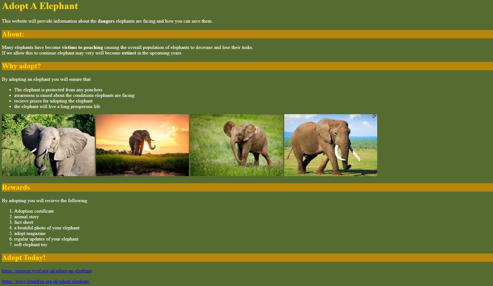

Hi my name is Miles Urmson I am a hardworking student at UTC Sheffield studying T level in Digital Software Development
I've always enjoyed computer science since primary school where I enjoyed programming games on scratch and on a micro bit which sparked my passion for the subject, this was only furthered cemented in my mind at GCSE where I discovered the wonders of programming inspiring me to study the subject as a T level. I'm most interested in programming, the dilemmas of technology and the fundamentals of technology
Currently, I've finished my first year of T level software development which had me do my two written exams and completed my ESP this involved planning a schedule to ensure I have time to revise consistently while ensuring I cover all topics. In addition, I looked at past papers and asked my teachers if the papers will still relevant regarding the newest specification allowing me to test my knowledge and ensure I prioritise topics that I need improvements with this method has resulted in me achieving a grade B for both the exam and ESP. I've also decided to do an EPQ in cyber security which is the equivalent to half an A level which will allow me to get a better understanding of cyber security as well as allowing me to write a professional essay and conduct meaningful research with sources to determine if my information is reliable.
I volunteered at Creed conventions where I helped with the set up of the convention including setting up consoles and computer monitors and testing they were working correctly and assisted the special guests on the panel and ensured payment was taken and balanced the accounts at the end of the day. In terms of my preparation when referring to future careers, I have work experience with a local computing company known as Eskai in which I stripped down and set up commercial printers, disassembled laptops to removed and reuse the RAM in other machines and learnt how to make Ethernet cables and components about networking such as PHP. In addition, I accompanied Eskai staff to set up broadband routers and printers in a clients home which required me to use complex thinking to manage and understand these new concepts and skills. Recently I have worked at ZOO Digital to make a dashboard that visualise J-SON data given to me in different visualisation formats with the feature to filter the data which allow me to determine which sector in computing I want to pursue in my future as these placement are vastly different from one another.
